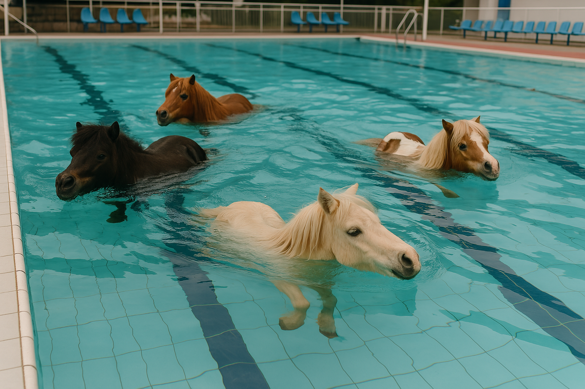
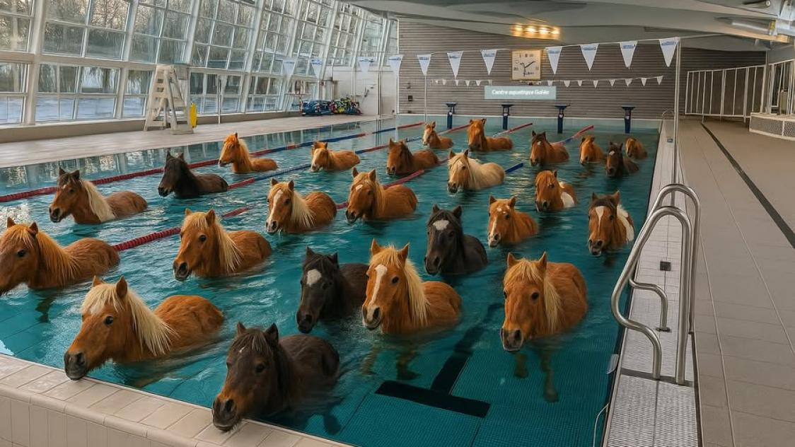

Plongez dans l'univers de l'aquaponey !
Découvrez le monde de l'aquaponey, un sport aquatique unique qui combine équitation et natation. Une expérience rafraîchissante pour petits et grands.

Sport Unique
Une discipline qui allie équitation et natation

Compétitions
Participez à des tournois nationaux

Formation
Des moniteurs diplômés à votre service
Notre mission
La Fédération d'Aquaponey a pour vocation d'organiser, de structurer et de développer la pratique de l'aquaponey sur le territoire national, dans le respect des règles de sécurité, du bien-être animal et de professionnalisme.
Événements à venir
📅 12 mai 2025
Initiations à l'aquaponey
Encadrées par des moniteurs diplômés
📅 2 juin 2025
Concours de déguisements "Poney des mers"
Prix pour les meilleurs costumes